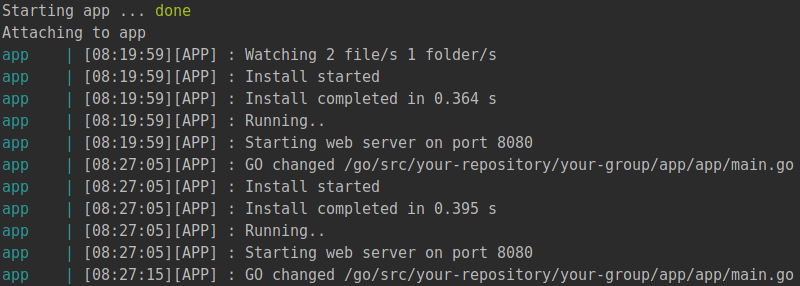
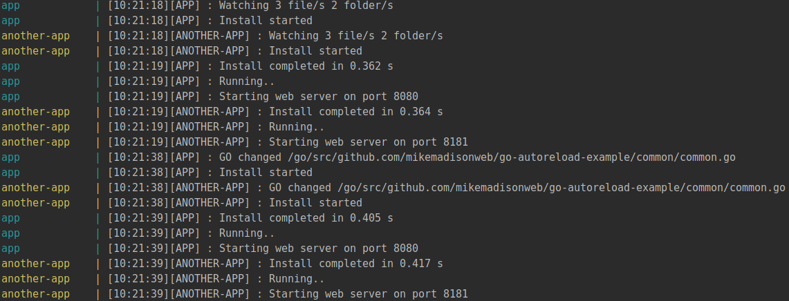

// todo(): Running Golang applications inside Docker containers with auto reload
The nature of Golang web application complicates the development process a bit, as a program needs to be compiled and executed in order to listen some specific port for incoming requests. During the development process feature of reloading your app automatically on file change can save a huge amount of time. It can become even harder when you use Docker containers in the local environment for your Golang microservices. This article provides a real-life example of a such an auto-reloading setup.
Introduction
Every newcomer to Golang usually come up with his/her own way of executing an app, whether using console commands or hitting buttons inside IDE. After a while, it becomes really tedious to performs the same operations manually over and over again on codebase update in order to see the changes in a browser. Most of you who faced frontend development workflow and tools like gulp and webpack are already familiar with a concept of auto reload. The main idea behind it that you have a daemon which responsibility is to monitor files inside a project for changes and repeat the needed processing upon update. It is equally suitable for Golang apps and there are already a bunch of packages on GitHub that offers that functionality, so there is no need for reinventing the wheel. In this article, we will use Realize library as I find it the most advanced in terms of features, performance and configuration options.
We would boost the workflow even more by leveraging Docker containers, if you are not familiar with it please spend some time on understanding the basics of Docker, I promise that you will not regret it. Inside a container we will run Realize instead of complaining or executing main.go directly and after all, there would be no need to restart container during the development of an app.
I have put all of the code regarding this article into a git repository so you can check it out in order to try everything by yourself and make sure how handy it can be.
Building a Docker container
Suppose you have an application that is consist of multiple microservices. I know that this term has got highly abused in past few years, but let’s not dive deeper into the details and just suppose we have multiple Golang apps each one represents a web server. In order to free yourself from running them in separate terminals and don’t worry about possible interferences
with other projects, we will put all of them into containers using docker-compose.
But let’s start with a single app, put a docker-compose config into the root of your project:1
2
3
4
5
6
7
8
9
10
11version: '3'
services:
app:
container_name: "app"
build: "./docker/go-develop"
volumes:
- ".:${GO_PROJECT_DIR}"
ports:
- "8080:8080"
environment:
GO_WORK_DIR: "${GO_PROJECT_DIR}/app"
GO_PROJECT_DIR environment variable stands for the path of the project files inside of the container, as you probably know Go code should be properly structured.
So this service definition tells docker-compose utility to build an image from Dockerfile located in “./docker/go-develop” in order to run an “app” container based on that image. Project files should be mounted to the container and port 8080 should be forwarded to the host machine to receive the requests from the browser. Let’s look what inside of the Dockerfile:1
2
3
4
5
6
7
8
9
10
11
12
13
14
15
16
17
18
19
20
21
22
23
24FROM golang:1.9-alpine
COPY root /
RUN apk add --no-cache ca-certificates \
dpkg \
gcc \
git \
musl-dev \
bash
ENV GOPATH /go
ENV PATH $GOPATH/bin:/usr/local/go/bin:$PATH
RUN mkdir -p "$GOPATH/src" "$GOPATH/bin" \
&& chmod -R 777 "$GOPATH" \
&& chmod +x /entrypoint.sh
RUN go get github.com/tockins/realize
WORKDIR $GOPATH
ENTRYPOINT ["/entrypoint.sh"]
CMD ["realize", "start"]
Even if you don’t know the syntax most of the instructions are self-explanatory. Besides installing needed dependencies and realize package there is an important operation. We are adding entrypoint.sh from the host machine, setting the executing permissions on it and mark the script as an entrypoint. The latter means that it would be executed before the main process inside a container and that is exactly what we need to reuse that image between multiple Golang applications.
All of that script does is just changing the directory before realize get started:1
2
3
4
GO_WORK_DIR=${GO_WORK_DIR:-$GOPATH/src}
cd ${GO_WORK_DIR}
exec "$@"
The reason behind introducing this entrypoint is that realize process will look for a main.go file inside of the current directory. It will also use the configuration(.realize.yaml) if it is present inside the directory, so you can tune the behavior of the realize depending on the app needs.
Auto reload
In the main.go file we will put really basic web server implementation:1
2
3
4
5
6
7
8
9
10
11
12
13
14
15
16
17
18
19
20package main
import (
"fmt"
"net/http"
"log"
)
func handle(w http.ResponseWriter, r *http.Request) {
fmt.Fprintf(w, "You have visited %s!", r.URL.Path)
}
func main() {
http.HandleFunc("/", handle)
fmt.Println("Starting web server on port 8080")
err := http.ListenAndServe(":8080", nil)
if err != nil {
log.Fatal(err)
}
}
Nothing that fancy, but if you run docker-compose up inside your project root directory it will set up an app and then you can visit http://localhost:8080/ with your browser to get the message “You have visited /!”.
All good so far, let’s try changing something inside our handle function. Just change the welcome message slightly, check the console to see how realize reloading the app:

Just refresh the page and voila! The message has been changed. Now let’s try to introduce another app into our setup.
Multiple applications
For the sake of an example I will add another application and to reduce code duplication I will reuse some part of the code(common directory):1
2
3
4
5
6
7
8
9
10
11
12
13
14
15
16
17
18
19package common
import (
"net/http"
"fmt"
"log"
)
const AppName = "app"
const AnotherAppName = "another-app"
func StartServer(port string, handlerFunc http.HandlerFunc) {
http.HandleFunc("/", handlerFunc)
fmt.Println("Starting web server on port " + port)
err := http.ListenAndServe(":" + port, nil)
if err != nil {
log.Fatal(err)
}
}
And the application bootstrap now looks the following way:1
2
3
4
5
6
7
8
9
10
11
12
13
14
15package main
import (
"fmt"
"net/http"
"github.com/mikemadisonweb/go-autoreload-example/common"
)
func handle(w http.ResponseWriter, r *http.Request) {
fmt.Fprintf(w, "You have visited %s in `%s`!", r.URL.Path, common.AppName)
}
func main() {
common.StartServer("8080", handle)
}
After adding service definition inside docker-compose.yaml and restarting docker-compose we will end up with two containers listening for requests on ports 8080 and 8181. But the most exciting part is even if you put an extra new line to common.go file and save the file, both applications will automatically recompile within a fraction of a second:

That's all for today. Happy coding!